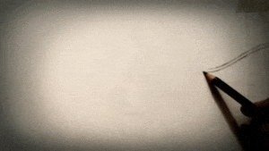
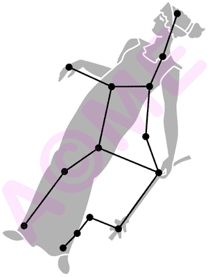
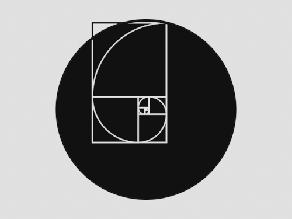

Привет, очаква се идеята ми да е оригинална и интересна, но уви едва ли ще задоволя очакванията на всеки, а още повече да ги надмина. Свидетели сте на сайт тип блог, в който присъстват интересите на едно не особено интересно девойче, което ще се старае да обновява ежеседмично "сайта" си. 'Колеги' по евентуално бъдещо страдание/старание, радвам се най-накрая да ви се представя, понеже пропуснах възможността в началото на курса. Казвам се Татяна, Таня и се извинявам предварително за може би не толкова впечатляващото си представяне в социален аспект. На началната страница всяка седмица ще поставям информация за различни съзвездия, с развлекателна цел, разбира се.
Съзвездие на седмицата.
 Съзвездието Дева символизира богинята на плодородието и реколтата. Голямо и много интересно съзвездие, лежащо на зодиака между Лъв и Везни. Дева е 6-тия знак от зодиака. Слънцето преминава през това съзвездие в периода от късния септември до края на октомври. Това е второто по големина съзвездие в небето след Хидра. На дистанция от 260 св.г. се намира най-ярката звезда на съзвездието - Спика, която е синьо-бяла звезда от първа звездна величина и е шестнадесетата по яркост на небето. Факт, е че в небето около нея няма други ярки звезди и това е причина съзвездието Дева да се открива трудно.